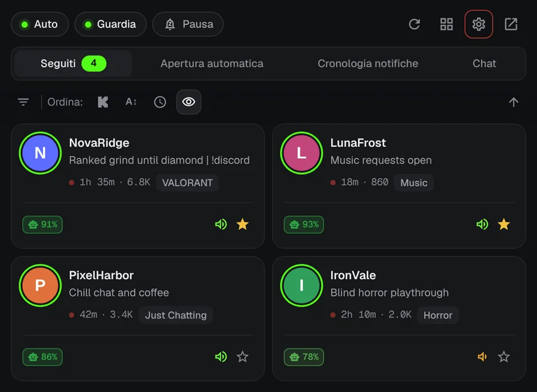
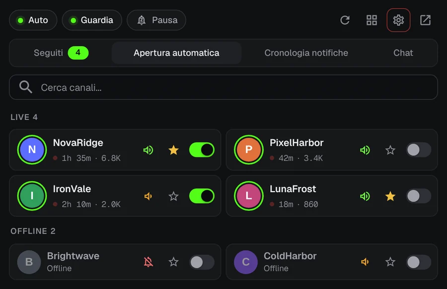
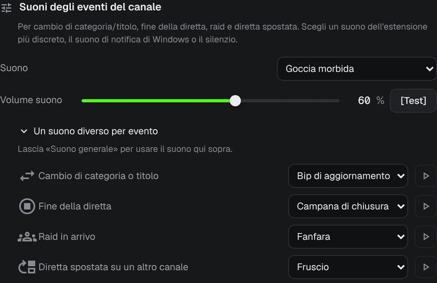
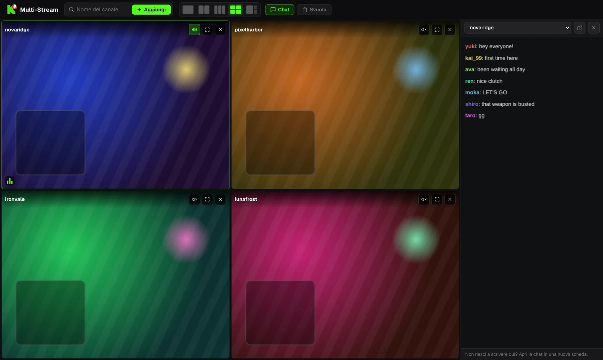

Non perdere mai più l’inizio di una live su Kick.
Il tuo streamer preferito va in live alle 3 di notte. KickAlert ti manda una notifica sul desktop in quel preciso momento, anche senza una scheda di Kick aperta. Gratis, senza limiti di canali e senza tracciamento.
Presto anche su Edge e Opera
 KickAlert
KickAlertProvalo. Premi una campanella.
Questi canali sono offline. Attiva la campanella di uno e guarda cosa succede quando va in live.
Avvisi immediati
KickAlert ascolta la connessione in tempo reale di Kick, così l’avviso arriva quando la live inizia, non minuti dopo. Scegli un suono per canale, imposta gli orari di Non disturbare o metti tutto in pausa fino al mattino.

Apertura automatica
Scegli i canali che devono aprirsi da soli. La live si apre in una nuova scheda appena parte, senza doppioni, e la scheda può chiudersi se un raid sposta la live altrove.

Sapere cosa è successo
Raid, fine live, cambio di categoria e live spostate possono avere ognuno il proprio avviso e il proprio suono, canale per canale.

Radar della chat
Ricevi una notifica quando il tuo nome o una parola scelta compare in una delle chat monitorate (fino a 5), anche con Kick chiuso. I filtri della chat nascondono lo spam e riconoscono le parole scritte con lettere simili.
Fino a quattro live in una sola scheda
Le live partono senza audio. Attiva l’audio di quella che vuoi con un clic. La chat sta in un pannello laterale.

I contenuti delle live sono illustrativi.
I tuoi dati restano nel browser
- Nessuna analisi, nessun tracciamento
- Comunica solo con kick.com
- Ogni autorizzazione spiegata al primo avvio
- Codice sorgente pubblico su GitHub
Domande
KickAlert è gratis?
Sì. Tutte le funzioni sono gratuite e non c’è limite al numero di canali che segui.
Devo tenere Kick aperto?
No. KickAlert funziona in background e ti avvisa anche senza schede di Kick aperte. Basta aver effettuato l’accesso a Kick nello stesso browser.
L’ho installato ma non ricevo notifiche.
Le nuove installazioni partono silenziose, per non sommergerti di avvisi. Attiva la campanella dei canali che vuoi, oppure per tutti i canali insieme nelle Impostazioni. Il controllo "Riceverai notifiche da questo canale?" nelle impostazioni di ogni canale mostra cos’altro potrebbe bloccare un avviso.
In quali browser funziona?
Oggi in Chrome e Firefox, Edge e Opera sono in arrivo. Brave, Vivaldi e gli altri browser Chromium possono installarlo dal Chrome Web Store.
Installa KickAlert
Presto anche su Edge e Opera